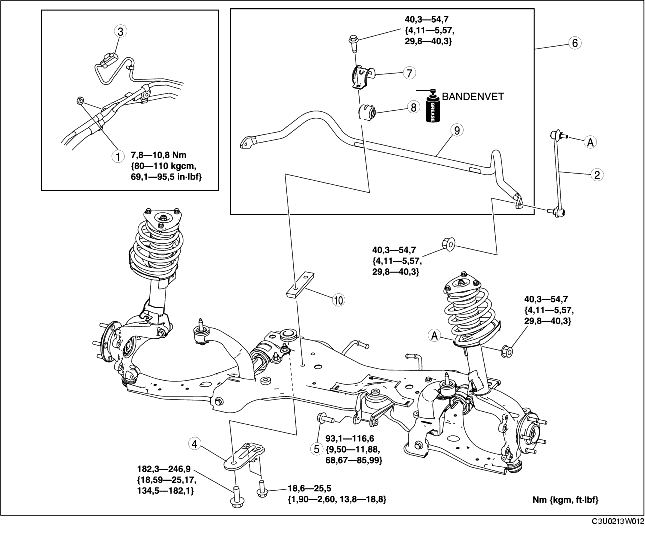

1. Verwijder de stuurkolom. (Zie VERWIJDEREN/PLAATSEN STUURWIEL EN -KOLOM.)
2. Verwijder de onderdelen in de aangegeven volgorde, zie de tabel.
3. Plaats de onderdelen in omgekeerde volgorde.
4. Controleer de wieluitlijning en corrigeer deze indien nodig. (Zie VOORWIELUITLIJNING.)

.
1. Ondersteun het subframe vóór met een krik.
2. Verwijder de steunen van het subframe.
1. Neem de ophangrubbers van de middelste uitlaatpijp los van het subframe.
2. Laat het subframe langzaam ca. 90 mm {3,5 in} zakken en verwijder de stabilisatorstang vóór.
1. Zet de flens van de beugel vast in een bankschroef.
2. Verwijder de stabilisatorstang vóór.
1. Controleer de montagerichting van het rubber van de stabilisatorstang.
2. Maak de opening in het rubber van de stabilisatorstang wijder tot 16-26 mm {0,7-1,0 in} en plaats het rubber op de aangegeven manier op de stabilisatorstang.
1. Breng vet aan op het rubber van de stabilisatorstang.
2. Plaats de beugel met behulp van een bankschroef op de stabilisatorstang.
1. Draai de bouten in de aangegeven volgorde vast.